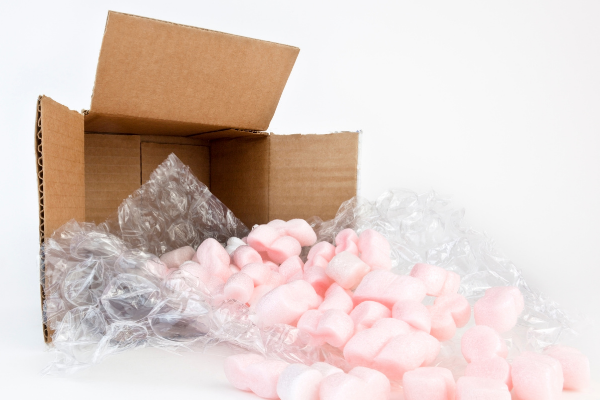
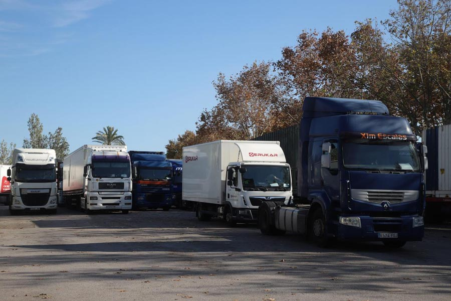
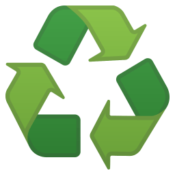
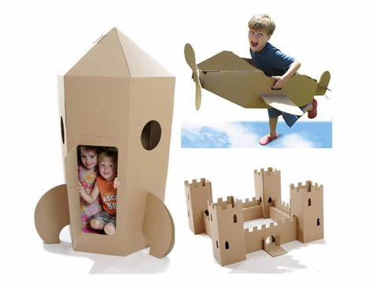
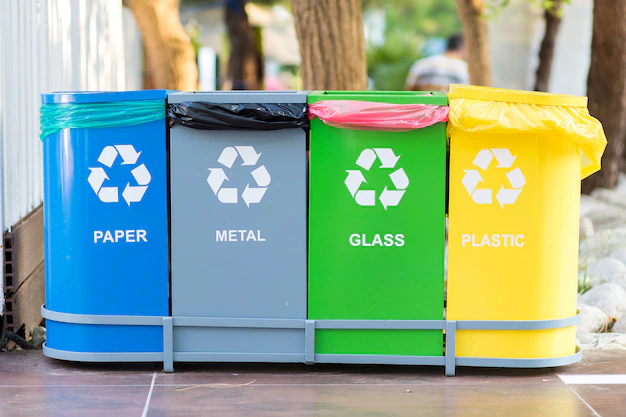

¿Que son los residuos de las compras online?
Las comprar de forma online, producimos residuos como son las cajas y embalajes donde se empacan, mientras son transportados hasta nuestra casa y hasta cuando se fabrican.
Los embalajes son principalmente de plástico desechable para resistir los golpes en la recogida y al ser enviados.

Los vehículos que llevan nuestras compras emiten gases por su combustible y tienen que recorrer grandes distancias.

Los países que más compran de forma online
| Países | Porcentaje de compra Online | Numero de habitantes |
|---|---|---|
| Tailandia | 66,8% | 70.701.633 habitantes |
| Corea del Sur | 65,6% | 51.709.098 habitantes |
| Turkía | 64,6% | 83.154.997 habitantes |
| Nuestro país se encuentra en el puesto número 23 | ||
| España | 54,4% | 47.007.376 habitantes |
Poniendo de nuestra parte
¿Cómo podríamos evitarlo?
Podemos utilizar las grandes tres R:

- Reducir
- Reutilizar
- Reciclar
Podemos Reducir al comprar menos por internet e ir más a las tiendas.
Podemos Reutilizar al utilizar el cartón de los embases y su plástico para manualidades o empacar otros objetos.

Podemos Reciclar al tirar a su contenedor correspondiente.
